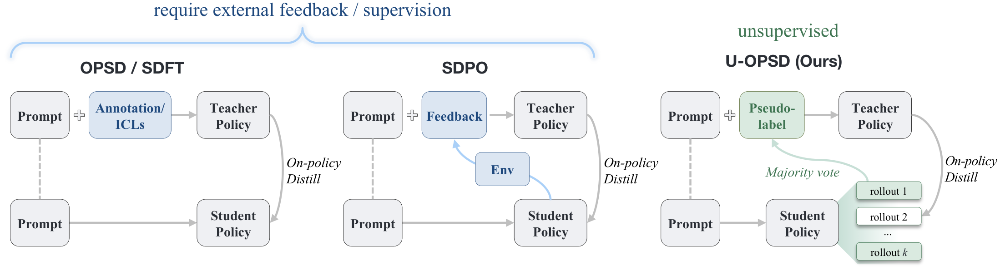
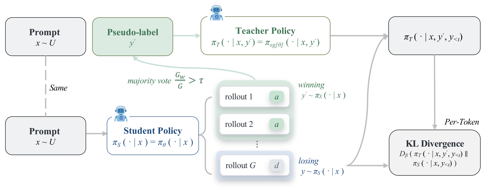
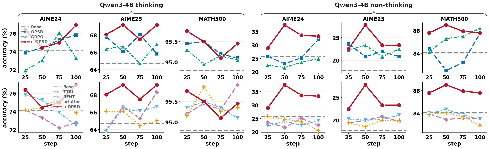
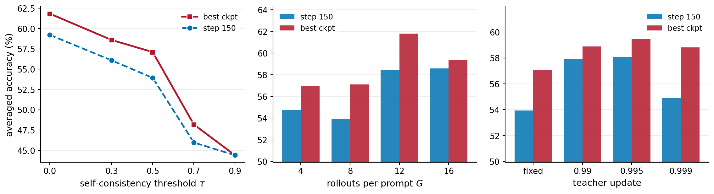
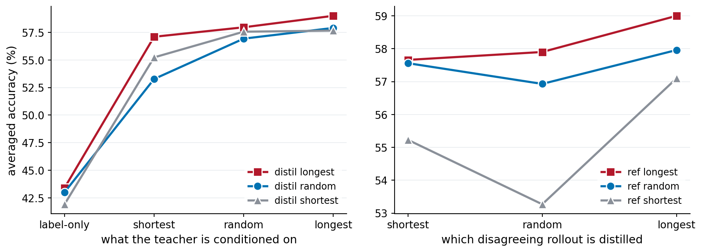

A language model can supervise its own distillation — no labels, no verifier, no larger teacher.
1UC San Diego · 2Georgia Institute of Technology · 3University of Maryland, College Park · 4ByteDance
On-policy (Self-)Distillation (OPD / OPSD) has shown strong potential for post-training large language models (LLMs). However, existing methods still rely heavily on external supervision, including ground-truth signals, environmental feedback, or guidance from larger models, and therefore fall short of genuine “self”-distillation. In this study, we show that on-policy self-distillation can be achieved using only a model's own generations via internal consistency. We propose unsupervised on-policy self-distillation (u-OPSD). u-OPSD first samples multiple rollouts and constructs a pseudo solution by majority vote under a self-consistency threshold. It then conditions the model's distribution on the pseudo-solution and distills itself on the disagreeing completions, allowing the model to correct itself precisely where it is confidently wrong. Across diverse benchmarks, base models, and training settings, u-OPSD consistently improves over the base models and matches or surpasses supervised methods with ground truth (GT) such as OPSD and GRPO. On five mathematical reasoning benchmarks, i.e., AIME24, AIME25, HMMT25, MATH500, and AMC23, u-OPSD improves over the base model by 8.5% and 10.7% on Qwen3 non-thinking mode at 4B and 8B scales, and outperforms OPSD by 3.2% and 2.3% on average, respectively. In thinking mode, u-OPSD stays on par with OPSD, ahead by 0.9% at 4B and level at 8B and surpassing GRPO by 0.7% and 1.1%, respectively.
On-policy self-distillation needs a teacher that is better than the student. Prior work buys that gap with something external — a gold solution in the teacher's context, a verifier's reward, a larger model. u-OPSD buys it with self-consistency: the model's majority answer over several rollouts is more reliable than any single rollout, so conditioning the teacher on that consensus creates the gap for free.

Draw G rollouts for a prompt and take a majority vote over their final answers. If the winning answer's share clears the self-consistency threshold τ, an agreeing rollout becomes the pseudo-solution; otherwise the prompt is skipped.
The teacher is the same model, given the pseudo-solution as privileged context the student never sees. That context is what makes its next-token distribution sharper than the student's.
Minimise the divergence between teacher and student over the k rollouts that disagreed with the vote. The update lands exactly on the traces where the model was confidently wrong, and nowhere else.

Three hyperparameters carry the method: the number of rollouts G, the self-consistency threshold τ, and how many disagreeing rollouts are distilled per prompt, k. Nothing else about the base recipe changes — the objective is still a full-vocabulary divergence on the model's own on-policy samples.
| Method | AIME24 | AIME25 | HMMT25 | MATH500 | AMC23 | Avg. |
|---|---|---|---|---|---|---|
| Qwen3-4B | ||||||
| Base | 25.83 | 17.78 | 10.83 | 84.10 | 66.25 | 40.96 |
| + SFT (GT) | 26.67 | 19.72 | 13.06 | 84.85 | 69.38 | 42.73 |
| + GRPO (GT) | 25.00 | 22.50 | 15.00 | 86.20 | 80.62 | 45.86 |
| + OPSD (GT) | 32.22 | 20.83 | 16.39 | 85.75 | 76.25 | 46.29 |
| + TTRL | 25.00 | 20.83 | 11.94 | 83.60 | 67.50 | 41.77 |
| + RENT | 22.22 | 20.28 | 11.39 | 84.00 | 74.38 | 42.45 |
| + Intuitor | 23.89 | 20.00 | 11.67 | 83.70 | 70.62 | 41.98 |
| + u-OPSD | 37.50 | 27.78 | 14.44 | 86.50 | 81.25 | 49.49 |
| Qwen3-8B | ||||||
| Base | 27.50 | 23.33 | 13.61 | 84.05 | 69.38 | 43.57 |
| + SFT (GT) | 26.94 | 21.67 | 11.94 | 84.10 | 72.50 | 43.43 |
| + GRPO (GT) | 30.56 | 21.94 | 13.06 | 87.85 | 73.75 | 45.43 |
| + OPSD (GT) | 41.67 | 28.06 | 18.33 | 87.15 | 85.00 | 52.04 |
| + TTRL | 27.22 | 21.11 | 13.06 | 84.45 | 71.88 | 43.54 |
| + RENT | 28.33 | 21.67 | 10.83 | 84.00 | 70.00 | 42.97 |
| + Intuitor | 26.11 | 22.50 | 11.67 | 84.20 | 73.12 | 43.52 |
| + u-OPSD | 45.56 | 34.72 | 18.61 | 89.55 | 83.12 | 54.31 |
The three label-free RL baselines — TTRL, RENT and Intuitor — stay within about a point of the base model at both scales. u-OPSD is the only label-free method that moves, and it moves past OPSD, which reads the gold answer.
| Method | AIME24 | AIME25 | HMMT25 | MATH500 | AMC23 | Avg. |
|---|---|---|---|---|---|---|
| Qwen3-4B | ||||||
| Base | 74.17 | 64.72 | 45.56 | 94.80 | 95.00 | 74.85 |
| + GRPO (GT) | 73.89 | 69.44 | 43.61 | 95.45 | 99.38 | 76.35 |
| + OPSD (GT) | 75.28 | 68.06 | 43.06 | 95.20 | 99.38 | 76.20 |
| + TTRL | 72.78 | 68.33 | 45.56 | 95.90 | 96.25 | 75.76 |
| + RENT | 74.72 | 65.83 | 43.06 | 95.25 | 99.38 | 75.65 |
| + Intuitor | 76.39 | 68.33 | 42.78 | 95.35 | 97.50 | 76.07 |
| + u-OPSD | 76.39 | 68.06 | 46.94 | 95.75 | 98.12 | 77.05 |
| Qwen3-8B | ||||||
| Base | 75.56 | 66.67 | 45.00 | 96.35 | 96.88 | 76.09 |
| + GRPO (GT) | 76.94 | 69.17 | 47.78 | 95.70 | 95.00 | 76.92 |
| + OPSD (GT) | 80.83 | 69.72 | 46.67 | 95.75 | 96.88 | 77.97 |
| + TTRL | 77.22 | 68.61 | 46.94 | 95.75 | 96.25 | 76.95 |
| + RENT | 77.50 | 70.28 | 45.83 | 95.95 | 96.25 | 77.16 |
| + Intuitor | 76.94 | 70.28 | 44.17 | 96.20 | 95.62 | 76.64 |
| + u-OPSD | 76.94 | 71.39 | 47.50 | 96.00 | 98.12 | 77.99 |
| Model | Method | AIME24 | AIME25 | HMMT25 | MATH500 | AMC23 | Avg. |
|---|---|---|---|---|---|---|---|
| Qwen3-30B-A3B-Instruct | Base | 80.00 | 63.33 | 43.33 | 96.33 | 95.83 | 75.77 |
| OPSD (GT) | 78.89 | 61.11 | 47.78 | 97.20 | 96.67 | 76.33 | |
| u-OPSD | 75.56 | 65.56 | 50.00 | 97.00 | 99.17 | 77.46 | |
| Qwen3-4B-Instruct | Base | 66.67 | 53.33 | 27.78 | 93.87 | 93.33 | 67.00 |
| OPSD (GT) | 62.22 | 52.22 | 31.11 | 94.93 | 95.00 | 67.10 | |
| u-OPSD | 68.89 | 57.78 | 28.89 | 94.20 | 94.17 | 68.78 |

Two findings run against intuition. First, filtering hurts: raising the self-consistency threshold τ makes the pseudo-labels cleaner but the model worse, and accepting every prompt (τ = 0) is the best setting we tried. Second, a slowly-updated teacher beats a frozen one, though only within a narrow band of EMA rates.

The teacher's context matters far more than which rollout supplies it. Stripping the reference down to the bare pseudo-label — the boxed answer with no reasoning — costs 10 to 16 points and drops every variant to the level of the untrained model. Given a full trace, it hardly matters which one.

Training and evaluation code will be available at github.com/williamium3000/u-opsd.
LoRA adapters for the checkpoints reported above are on the Hugging Face Hub. Each card carries its own evaluation numbers, the exact training configuration, and that run's training log.
| Base model | Mode | Weights |
|---|---|---|
| Qwen3-4B | non-thinking | u-opsd/qwen3-4b-non-thinking |
| Qwen3-4B | thinking | u-opsd/qwen3-4b-thinking |
| Qwen3-8B | non-thinking | u-opsd/qwen3-8b-non-thinking |
| Qwen3-8B | thinking | u-opsd/qwen3-8b-thinking |
@article{li2026uopsd,
title = {On-Policy Self-Distillation without Any Supervision},
author = {Li, Yijiang and Wang, Bingyang and Liang, Yijun and
Tian, Yunjie and Fu, Di and Vasconcelos, Nuno},
journal = {arXiv preprint arXiv:2608.06296},
year = {2026}
}